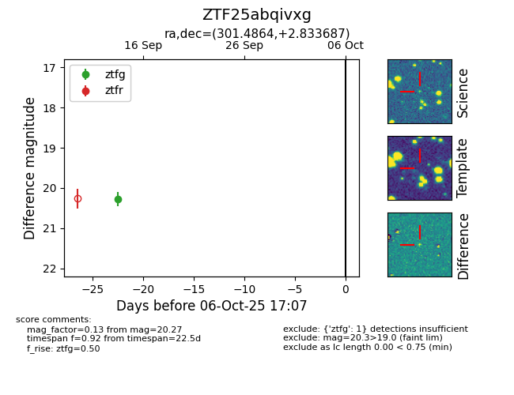

FINK: ZTF25abqivxg
Lasair: ZTF25abqivxg
ALeRCE: ZTF25abqivxg
ZTF25abqivxg (ztf,fink)
equatorial (ra, dec) = (301.4864,+2.83369)
galactic (l, b) = (44.2519,-15.15176)

last ztfg=20.27
1 ztfg detections